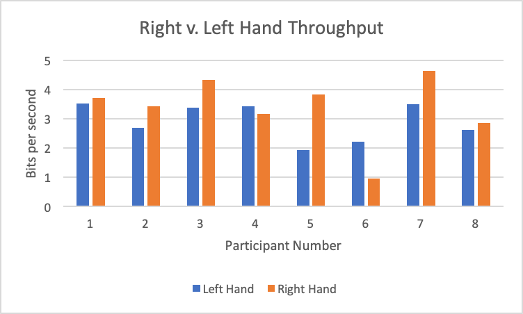

Fitts Law Study Results
Abigail Zimmermann-Niefield, Gabriella Johnson, Vinitha Gadiraju
Testing Right Index Finger vs. Left Index Finger using Fitt’s Law
Summary
For our study on Fitt’s Law, we tested average speed using the index finger on the right hand versus the index finger on the left hand.
We had all participants start with their right hand and complete 9 sequences.
The participant then switched hands and completed another 9 sequences.
We had 8 participants total in our study. 1 was left-handed and the rest were right-handed.
6 right handed participants had faster average times using their right index finger than left.
The 1 left handed participant had a faster average time using their left index finger than right.
1 right handed participant also had a faster average time using their left index finger than right.
It would have been interesting to have had an equal amount of left-handed and right-handed people,
so that we could have compared dominant vs non-dominant hand in addition to left vs right.
An interesting note during data collection is that almost everyone commented that they usually use their middle finger on their trackpad
and that the index finger felt a bit unnatural.
Results
We calculated the grand throughput for Right Index Finger and Left Index Finger. We found that the grand throughput for
the Right Index Finger had a grand throughput of 3.366 bits/second, and the Left Index Finger had a grand throughput of 2.911 bits/second.
Our results are represented in the following charts. Note how each participant had a higher throughput for their Right Index Finger except for
Participant 4, who was left-handed, and Participant 6, who made a mistake during their Right Index Finger trial.
